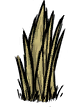
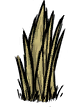

| Grass Tuft | |
|  |
|
| Tool Required | |
| Resources | |
| Renewable? | No |
| Common Biomes | Savanna, Grassland |
| DebugSpawn | "grass" |
| Grass Tuft | |
  |
|
| Perk | Can be replanted |
| Fuel Value | 360/180 sec |
| Stacks up to | 10 |
| DebugSpawn | "dug_grass" |
| Grass Tuft | |
|  |
|
| Tool Required | |
| Resources | |
| Renewable? | No |
| Common Biomes | Savanna, Grassland |
| DebugSpawn | "grass" |
| Grass Tuft | |
|
|
| Perk | Can be replanted |
| Fuel Value | 360/180 sec |
| Stacks up to | 10 |
| DebugSpawn | "dug_grass" |
| “ | Is grass. | ” |
| –Wolfgang | ||
Grass Tufts are small plants commonly found in Savanna and Grasslands, but they can also appear in other biomes as well. They can be harvested to receive 1 Cut Grass, after which they will need 3 days to regrow (Rain will reduce this time).
Grass Tufts can be dug up with a Shovel or Regal Shovel and replanted in a new location (typically closer to a base camp). Doing this will require the tuft to be fertilized before it will regrow any new grass, and fertilized again after 20 harvests. Grass will grow extremely slowly during Winter.
These plants are highly flammable and can be used as fuel in Campfires/Fire Pits, but is not recommended since Grass Tufts are a nonrenewable resource. When burned on the ground, they will leave behind 1 Ash and no plantable tuft.Harvested Grass Tuft
Because they burn easily, Grass Tufts planted close together are very susceptible to lightning strikes. This can be prevented by building Lightning Rods near them.
In the Reign of Giants DLC, Grass Tufts will turn into Withered Grass Tufts during Summer. During this condition, Grass Tufts are unharvestable for their Grasses and digging these will yield 1 Cut Grass. A way of curing or preventing these from withering is to simply apply fertilizers or build an Ice Flingomatic nearby.
| Naturally spawning world objects | |
| Plants | Berry Bush • Carrot • Cave Banana Tree • Cave Lichen • Flower (Evil Flower, Fern) • Grass • Light Flower • Lureplant • Mandrake • Mushrooms • Mushtree • Plant • Reeds • Sapling • Spiky Bush • Tree • Totally Normal Tree |
| Mobs and Mob Housing | Beehive • Hound Mound • Pond • Pig Fortress • Pig House • Pig King • Pig Torch • Rabbit Hutch • Rundown House • Slurtle Mound • Spider Den • Spilagmite • Splumonkey Pod • Tallbird Nest • Walrus Camp • Worm Hole |
| Inanimate | Ancient Pseudoscience Station • Ancient Statue • Basalt • Boulder • Gramaphone • Grave • Harp Statue • Headstone • Suspicious Dirt Pile • Marble Pillar • Marble Tree • Maxwell's Door • Maxwell Statue • Maxwell's Light • Merm Head • Nightmare Light • Nightmare Lock • Nightmare Throne • Obelisk • Ornate Chest • Pig Head • Pillars • Relic • Sinkhole • Skeleton • Stalagmite • Touch Stone • Thulecite Wall |
| Things | Box Thing • Crank Thing • Eye Bone • Metal Potato Thing • Ring Thing • Wooden Thing |
{kind=link}